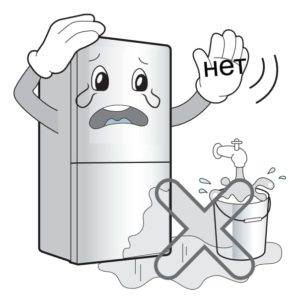
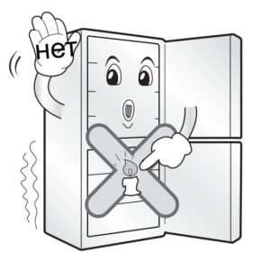
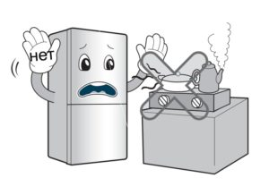
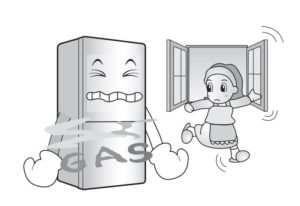
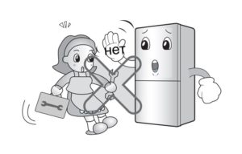
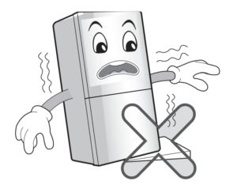
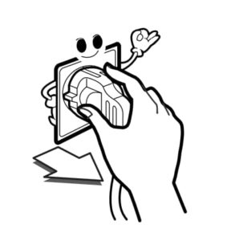

Требования безопасности при эксплуатации холодильника
Не ставьте тяжелые или опасные предметы, вазы с цветами, чашки, косметику, медикаменты или какие-либо емкости с водой на холодильник. При открытии или закрытии двери предмет может упасть и привести к травме, возгоранию или поражению электрическим током.
Не держитесь за двери, полки, расположенные в двери морозильной камеры или холодильного отсека. Это может привести к падению холодильника или повреждению рук. Особенно не позволяйте делать это детям.
Не устанавливайте холодильник во влажном месте, либо в месте куда может попасть вода или дождь. Это может привести к короткому замыканию, пожару и травмам.

Не используйте и не держите рядом с холодильником горючие материалы: эфир, бензин, спирт, лекарства, сжиженный газ, спрей или косметику. Это может привести к взрыву или пожару.
Не ставьте зажженную свечу в холодильник, в целях освежения воздуха. Это может привести к взрыву или возгоранию.

Не держите медикаменты или материалы для исследований в холодильнике. При хранении материала, требующего жесткого температурного режима, материал может быть поврежден или может произойти неожиданная реакция.
Не располагайте холодильник вблизи нагревательных приборов. Это может привести к пожару.

Не помещайте в холодильник живых животных.
Если холодильник попал в воду, пользуйтесь им только после проверки представителем сервисного центра или мастера. В противном случае это может привести к поражению электрическим током или пожару.
При утечке газа не прикасайтесь к холодильнику или источнику выхода и немедленно проветрите помещение. В этом холодильнике в качестве безопасного для окружающей среды хладагента используется природный газ (изобутан R600a), но даже незначительное его количество (80~90 г) является горючим. Если газ вытек в результате серьезного повреждения полученного при транспортировке, установке или эксплуатации холодильника, любая искра может привести к пожару. Для дальнейшей эксплуатации обратитесь в сервисный центр.

Не распыляйте воду внутри или снаружи холодильника и не чистите холодильник бензином или растворителем. Это может привести к короткому замыканию, пожару или травмам.
Не просовывайте руки под днище холодильника. Металлические кромки днища могут привести к травме. Перемещайте холодильник за ручку, расположенную у днища спереди и сзади сверху. В противном случае руки могут соскользнуть, что станет причиной травмы.
Открытие или закрытие двери холодильника может травмировать лиц, стоящих рядом. Пожалуйста, будьте осторожны. При открытии или закрытии двери может произойти захват руки или ноги, либо угол может причинить травму ребенку.
Если вы почувствуете странный запах или увидите, что из холодильника идет дым, немедленно выньте вилку из розетки и обратитесь в центр по техническому обслуживанию. Это может быть признаком возгорания.
Не позволяйте кому-либо, кроме квалифицированного специалиста, проводить ремонт. Это может привести к травме, поражению электрическим током или пожару.

Используйте холодильник только в бытовых целях (не храните в нем медикаменты, материалы для опытов, не используйте холодильник на корабле и т.д.). Это может привести к неожиданному риску, например, возгоранию, поражению электрическим током, повреждению содержимого или химической реакции.
При утилизации холодильника, снимите с двери магнитные уплотнители, оставьте полки в холодильнике. В противном случае можно случайно запереть в холодильнике детей.
Устанавливайте холодильник на твердом и ровном полу. При открытии и закрытии двери, установленный на неровной поверхности холодильник может упасть, что может привести к травме или смертельному исходу.

Не подставляйте руки или посторонние предметы в выходное отверстие воздуха, корпус или днище холодильника, жаропрочную решетку (выходное отверстие) на задней стенке. Это может привести к поражению электрическим током или травме.
Несоблюдение данных указаний может привести к травме, повреждению дома или мебели. Пожалуйста, будьте осторожны.
Если вы хотите утилизировать холодильник, обратитесь в специализированную службу. Хладагент и изолирующий газ, применяемые в изделии, требуют особых мер по их утилизации. Перед утилизацией убедитесь, что ни одна трубка на тыльной стороне изделия не повреждена.
Не прикасайтесь мокрыми руками к продуктам или контейнерам, находящимся в морозильной камере. Это может привести к обморожению.
При повторном включении вилки в розетку подождите 5 минут или более. В противном случае может произойти отказ в работе морозильной камеры.
Не ставьте бутылки в морозильную камеру. При замерзании содержимого, бутылка может расколоться и стать причиной травмы.
Извлекайте вилку из розетки держась за вилку, а не за конец шнура. Извлечение за шнур может привести к поражению электрическим током, короткому замыканию и пожару.

Вилка холодильника с морозильным отделением должна быть установлена так, чтобы в случае непредвиденных обстоятельств до неё можно было легко дотянуться и вынуть её из розетки.
Если изделие не будет использоваться долгое время, отключите прибор от сети. Любое нарушение изоляции может привести к пожару.
Не позволяйте детям трогать или играть с панелью управления на лицевой стороне изделия.
Не разбирайте, не ремонтируйте и не вносите изменения в конструкцию изделия. Это может привести к пожару или неполадкам в работе, грозящим травмой.
Рекомендации по хранению продуктов
- Не храните при низкой температуре продукты, которые от этого теряют качество, например, бананы или дыни.
- Всегда дожидайтесь, когда продукт остынет до комнатной температуры. Никогда не ставьте в холодильник горячие продукты. Это может привести к порче других продуктов и потерям электроэнергии.
- Храните продукты в емкостях с крышками. Это предотвращает появление влаги, возникающей при испарении, и способствует сохранению вкуса и питательных свойств продуктов.
- Не закрывайте продуктами вентиляционные отверстия. Равномерная циркуляция холодного воздуха обеспечивает одинаковую температуру внутри холодильного отделения.
- Не прислоняйте продукты к внутренним стенкам холодильника (зазор должен составлять 3-4 см). Это мешает равномерной циркуляции холодного воздуха внутри холодильного отделения и способствует образованию льда на внутренних стенках.
- Не следует часто открывать дверцы холодильника. Открывание дверей ведёт к попаданию в холодильник теплого воздуха, что вызывает повышение температуры.
- Нельзя помещать в дверную секцию слишком много продуктов, т.к. это может помешать двеpце закрываться.
- Не храните в морозильном отделении бутылки, потому что при замораживании они могут лопнуть.
- Нельзя повторно замораживать размороженные продукты. При этом они теряют вкус и питательные свойства.
- Не храните в холодильнике медицинские препараты, материалы для научной работы и другие товары, чувствительные к изменению температуры. Запрещается хранить в холодильнике продукты, требующие строгого температурного контроля.
- Дверная секция морозильного отделения помечена значком. В ней поддерживается температура -12°C. В ней удобно хранить продукты, которые скоро понадобятся.
- Если нужно быстро заморозить новые продукты, положите их в средний ящик морозильного отделения и нажмите кнопку быстрой заморозки.